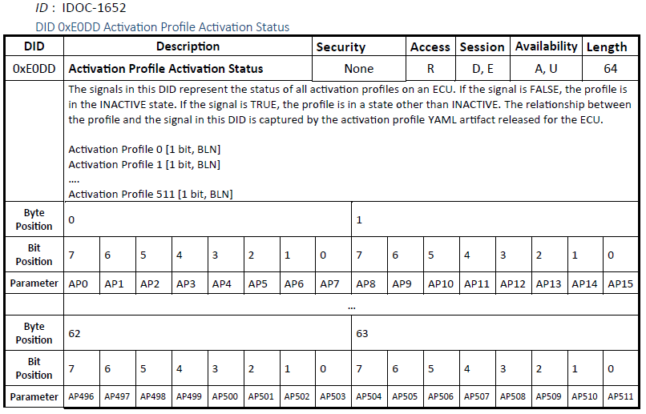

RTA-SUM SPM Software Requirements Specification Document
Document History
Release Date |
Version |
Description |
|---|---|---|
Jul 10, 2024 |
8.0.0 |
Added satisfies label to cover the Functional Requirements:
|
Sep 06, 2024 |
8.0.0 |
Updated according to revision History of the source documents |
Aug 04, 2025 |
8.1.0 |
Update status of requirements:
|
Sep 18, 2025 |
8.1.0 |
Update status of requirements:
|
Sep 29, 2025 |
8.1.0 |
Added the following requirements (GMSUM-9893):
Modified the following requirements:
|
Oct 29, 2025 |
8.1.0 |
Modified the following requirements:
Added the following requirements:
|
Nov 07, 2025 |
8.1.0 |
|
Jan 16, 2026 |
8.1.0 |
Added the following requirements:
|
Mar 12, 2026 |
8.1.0 |
|
Mar 14, 2026 |
8.1.0 |
|
Mar 18, 2026 |
8.1.0 |
|
Requirements List
Power Management Framework
Because power management functionalities must operate before the uPlatform is potentially up and running, the power management communication SHALL be implemented using a customized communication pattern implemented using the standard SOME/IP-based frame structure over UDP. |
All SMs and PMs SHALL use port 30480 and follow the SMFrame and PMFrame definitions described below and in the following sections and both SHALL use Big Endian byte order. |
The frame design is given as follows:
2nd Part of the SOME/IP header: is added to allow the SOME/IP bridge to consume the PM traffic without a need for special handling for the PM traffic, therefore the values below are dummy and not used by the PM logic. The values SHALL be set as follow:
NOTE: the SM/PM communication is designed to look like event notifications over SOME/IP, hence the message type being 0x02. This includes use cases where one SM is making a request to another SM and the requested SM subsequently providing response back to the requesting SM. |
|||||||||||||||||||||||
SrcPM_ID SHALL be set to the 4 bytes of the IP address of the Src/Dest PM. |
The Payload of the SMFrame is used to convey activation commands, deactivation commands, and/or Status information. All SMFrame messages SHALL be sent with the ID 0xFFFD 8FFF. (service ID / method ID). NOTE: service ID 0xFFFD is used to avoid conflict with other actual SOME/IP services in the vehicle. Also the value 0xFFFF is avoided to prevent conflict with uProtocol, where 0xFFFF is a reserved wild-card. |
The Payload associated with SMFrame.PROFILE_REQUEST SHALL use the following fields (See Figure 7 for an illustration):
|
The Payload associated with REQ_STATUS_PROF_STATE responses SHALL use the following fields ( Figure 10 provides an illustration of this message):
|
Profile State Value (1 byte) Repeating with Profile IDs and Request Status |
The Profile State field shall use the enumeration provided:
|
Every SMFrame message SHALL:
|
The PM Heartbeat Frame is used to periodically convey the status of the PM/SM combination. The Custom Header of PM messages SHALL be sent with the ID 0xFFFE 8FFE |
The HeartbeatCounter SHALL be implemented as an incremental counter of the type uint32 where it will count from 0 to 2:sup:32-1. |
The NumberProfileActive field SHALL provide the count of the number of profiles managed by the local SM that are currently in a state that is NOT INACTIVE, as a uint16 integer value. This field is intended to help developmental debugging efforts where a developer can use a network traffic analyzer to monitor the profile activation activities on a node at a high level. |
The NumberProfileActive field SHALL provide the count of the number of profiles managed by the local SM that are currently in a state that is NOT INACTIVE, as a uint16 integer value. This field is intended to help developmental debugging efforts where a developer can use a network traffic analyzer to monitor the profile activation activities on a node at a high level. |
SM SHALL provide a total number of profiles that it is managing which are currently not in INACTIVE state to its PM. |
The sender of the wakeup frame asserts hosts that need to be awaken by setting the bit corresponding to the desired hosts to 1 and all other hosts as 0.
The sender can de-assert wakeup for a host that it had previously asserted by setting the bit corresponding to the host as 0.
NOTE: The following table report the wake-up frames A and B bit maps (bits are in hexadecimal format)
|
This table define a bit map for the CAN wake-up frames A, B and C for intermediate node. Moreover, it defines which deployment needs to consume the frames. Since the ETAS’ SPM Intermediate is deployed ONLY on CHM, the only WUF in scope is the A one. |
This table define the CAN ID frame for each deployment. Taking into account that ETAS’ SPM Intermediate is deployed only on CHM, on transmission side the CAN ID are: - 339 for CAN A frame;
- 355 for CAN B frame;
- 371 for CAN C frame;
On reception side, the accepted CAN ID are in the range [336, 351] |
A swEntity MUST use one or more activation profiles to specify its dependencies (SW or HW) RATIONALE: A swEntity MAY be dependent on one or more other swEntities, each of which MAY be further dependent on yet other swEntities. |
A swEntity that is referenced as a dependency in an activation profile MUST be uniquely identifiable as a discoverable service: NOTE: the scope of this swEntity can be bigger than that one service. But this association to the service allows the swEntity to be discoverable through the service discovery. |
The PM SHALL:
|
The PGTT SHALL then specify all the remote device wakeup that can be executed from this device. To do so, it will populate the following fields for
each target device
When an intermediate node receives a wakeup frame (CAN or Ethernet) where bits are set to 1 for devices that are managed by the intermediate node, the intermediate node uses the Intermediate Node Wakeup Frame Handling Information for the various target devices to understand the wakeup action it should perform. This information is written for each target device. The boolean field Directly Managed by the Waking Device identifies if the target device is a device that the intermediate node is directly managing so that a wakeup action must be taken when the intermediate node receives a wakeup frame with this device’s bit set to true. The Wakeup frame field identifies the wakeup frame (A or B) that this target device bit resides. Then the Wakeup bit field identifies the actual wakeup bit within that frame corresponding to this target device. |
When an intermediate node receives a wakeup frame (CAN or Ethernet) where bits are set to 1 for devices that are managed by the intermediate node, the intermediate node uses the ?Intermediate Node Wakeup Frame Handling Information? for the various target devices to understand the wakeup action it should perform. This information is written for each target device. The boolean field ?Directly Managed by the Waking Device? identifies if the target device is a device that the intermediate node is directly managing so that a wakeup action must be taken when the intermediate node receives a wakeup frame with this device?s bit set to true. The ?Wakeup frame? field identifies the wakeup frame (A or B) that this target device bit resides. Then the ?Wakeup bit? field identifies the actual wakeup bit within that frame corresponding to this target device. The PM SHALL treat the Wakeup Sequence field as a 1 byte value representing the order of wakeup command execution. |
The PM SHALL start/stop sending the command corresponding based on wakeup command type and command value. |
The PM SHALL treat the Wakeup Step Delay Field as a 2 byte value representing a time delay in milliseconds before proceeding to the next step in the PowerOnDevice Sequence |
SPM SHALL define the:
* Command Type as 1-byte hexadecimal value
* Command value as 1-Byte value.
The command type and command value interpretation are provided in table
|
PM SHALL treat the Loss of Node DTC Field as a 2 byte value representing the base of the DTC to be set if the corresponding Target Device cannot be reached. |
PM SHALL treat the DTC Timeout as a 2-byte value representing the length of time in milliseconds to delay before the PM sets a loss of communication DTC as defined in the DevicePowerState Functionality Section. |
The following devices SHALL support the stated wakeup mechanisms:
|
PM SHALL only honor PowerOnDevice commands from its corresponding SM. The interface is not used to send PowerOn requests from one power manager to another or from other SMs. |
PM SHALL power on Target Devices based on the incoming PowerOnDevice request received. Note that this means the following:
|
PM SHALL always assert the wakeup for the requested host even if the host is already awake. This is to ensure that the requested host will stay awake as long as it is still required by the requesting SM. |
PM SHALL also be responsible for keeping the Target Device awake as long as the SM is still functional and has not made a PowerOffDevice request for that same Target Device. |
PM SHALL provide a PowerOffDevice local interface to allow its local SM to request powering off devices that the PM had previously powered on. |
PM SHALL only honor PowerOffDevice commands from its corresponding SM. The interface is not used to send PowerOff requests from one power manager to another or from other SMs. |
For each requested device, the PM SHALL keep track of all the requesters and deactivate that device only after all requesters have issued the PowerOffDevice request. |
PM SHALL power down the host on which it is running only after receiving the PowerOffDevice method with its own address from its corresponding SM. |
When powering down a device, the PM SHALL:
|
PM SHALL provide a MonitorDevice interface to allow a local SM to request the monitoring of a remote hosts’ status for reporting back in the DevicePowerState interface NOTE: The remote host can act as requester of local profiles or/and it can be requested by the local SM. |
This interface SHALL also allow the SM to request stop monitoring of a host it has requested to be monitored previously NOTE: The remote host can act as requester of local profiles or/and it can be requested by the local SM. |
PM SHALL publish the DevicePowerState interface to reflect the status of EACH Target Device configured in the PGTT. This is an extension of the actual SDVA-4393 requirement to cover all the PGTT Target Devices. This is needed in order to accomplish ‘’the DevicePowerState transition diagram’’ in SDV-2017. |
The status of a hardware entity provided by the DevicePowerState interface SHALL be set to Faulted when any of the following are true
|
The status of a hardware entity provided by the DevicePowerState interface SHALL be set to Reboot when any of the following are true:
|
The status of a hardware entity provided by the DevicePowerState interface SHALL be set to Pending_Shutdown when any of the following are true:
|
The status of a hardware entity provided by the DevicePowerState interface SHALL be set to Off when any of the following are true:
|
The status of a hardware entity provided by the DevicePowerState interface SHALL be set to On when any of the following are true:
|
Initializing from the time that the first wakeup request in the sequence has been sent with the Target in the Off State and the time that it reaches any of the other states |
Each PM SHALL cache the state of a calibratable list of remote hosts that it works with to avoid incurring latency related to waiting for the heartbeat when the remote PM is known to be running already |
For setting a Loss of Node DTC, the PM SHALL:
|
PM SHALL transmit the wakeup frame in the following way
When there is no longer any device to be activated, the PM SHALL transmit an all-zero wakeup frame for 3 steady state periodic intervals and then stop transmitting the frame. |
When sending the Wakeup Frame, the PM SHALL keep track of all the bits that it has set and OR them together with each transmission (e.g. never send the Wakeup Frame with a bit set to zero for a device the PM intends to keep awake). |
A PM on a non-Managing Node that has an Ethernet connection but NOT CAN, SHALL:
|
A PM on a non-Managing Node that has both an Ethernet and Wakeup CAN connection, SHALL:
|
PM SHALL publish a periodic heartbeat per the PM Heartbeat Frame Design Section to inform remote hosts that the host where the PM resides is available for communication. |
PM SHALL send the Heartbeat Frame with a HeartbeatCounter value of zero when any of the following are true:
|
After the initial transmission of a zero HeartbeatCounter value, the PM SHALL increment the HeartbeatCounter by one with each subsequent transmission of the message. |
PM SHALL multicast the Heartbeat message at a calibratable periodic rate for the first 3 counts (default 5ms) and a separate calibratable periodic rate for all subsequent counts (default 1 second). The periodic rate for the first three transmissions is calibrated to be faster to make sure that recipients can receive the heartbeat as quickly as possible even if the initial heartbeat is dropped. The periodic rate for the subsequent counts and the value of the counter should also provide a rough idea of the time a device has been awake (with a slight offset since the value will increment for the first, quick counts). |
PM SHALL transmit the Heartbeat message with a HeartbeatCounter value of 2^32-1 (0xFFFFFFFF) whenever the host has entered into its power down sequence to reach its primary power off state, such that the periodic transmission never ceases without a shutdown indication. |
Upon a restart, the PM SHALL:
Note: All error handling related to the activation profiles are the responsibilities of the SM.
|
Each swEntity MUST have one and only one SM that is responsible for the final determination of whether that swEntity is to be started or stopped |
SM’s activating a software entity hosted on a remote host SHALL identify the location of the responsible remote SM as the IP address of the swEntity itself. |
Each host MUST have only one SM that is responsible for all of the swEntities on that host |
Requirement: The SM of each hostSHALLinform its local PM that it has the need for the localhost by sending the PowerOnDevice request specifying the IP address of the localhost. [$SRS_SPM 0058]
|
The SM of each host SHALL inform its local PM that it needs the localhost to be running by sending the PowerOnDevice request specifying the IP address of the localhost. |
The SM of each host SHALL inform its local PM that its need for the localhost has ended by sending the PowerOffDevice request specifying the IP address of the localhost. |
SM SHALL activate a swEntity it manages based on the following information
Note that the request for the swEntity may be an indirect request due to the swEntity being a dependency within another swEntity’s
activation profile
|
SM SHALL deactivate a swEntity it manages when all of the following are true:
|
The request for activation of a swEntity to the SM SHALL be made in the form of an activation request of an activation profile of that swEntity. |
An activation profile for a particular swEntity has required and optional contents to maximize flexibility for dependency specification.
Required content:
|
Default activation priority of the profile:
|
Activation timeout limit of the profile when vehicle is in off power mode SHALL be an integer specified in the units of seconds with 0 meaning profile cannot be activated in off power mode
|
An additional attribute is specified for each SwEntity to address if the SwEntity dependency SHOULD be activated :
|
Default activation priority of the profile: SHALL have one priority for vehicle on and another priority for vehicle off usage |
Each selectively activatable swEntity MUST have at least one activation profile, with profile 0 being the default profile |
For each profile managed, the SM SHALL track all of the requesters who requested activation of this profile by doing the following:
|
When a new valid ActivateProfile request is received and the state of the profile is Inactive:
|
In Inactive state, there should be no action when a DeactivateProfile request is received |
When a valid DeactivateProfile request is received:
|
When a new valid ActivateProfile request is received: and the state of the profile is Activating
|
When the profile-owning software entity itself is activated transition to Activated |
When a valid DeactivateProfile request is received:
|
When the software entity owning the profile has been deactivated AND all the dependencies in the profile have been successfully requested to be deactivated, transition to Inactive |
When a valid ActivateProfile request is received and the state of the profile is Deactivating:
|
When the state of a profile changes, the SM SHALL notify all the activation requesters of the updated profile state via the REQ_STATUS_PROF_STATE message of the SM communication frame |
Profile activation request to a SM SHALL be made using the ActivateProfile method by passing the IDs of the requested profiles. Multiple profiles MAY be requested in one request |
Each SM SHALL also provide a RequestStatusProfileState interface to allow the SM to communicate the request status as well as the updated profile state to local and remote activation requesters |
Upon receiving an activation request, the SM SHALL first determine if the request is valid and permitted.
Please, take into account that If the request is determined to be invalid or not permitted point is not implemented. |
The requesting SM SHALL retry sending the same ActivationProfile requests at a calibratable interval when no response is received, or the request is rejected. The calibration value MAY be dependent on the reject reason. But this is to be determined by the domain specific requirements. When retry is permitted, the SM can continue retry for as long as the activation criterion for the profile is still met. |
The receiving SM SHALL provide a response to each received request from each sender. The response SHALL include a response for each received profile request, even if the two requests are received very close to one another. Each response SHALL include all the profiles contained within the request. This makes the interaction pattern between sender and receiver very predictable. |
SM SHALL activate a profile by:
|
A profile SHALL transition into the Activated state as soon as the swEntity associated with the profile and its network communication are both activated. The activation of dependencies can continue in this activated state. Note that it is possible that a dependency cannot be activated for some reason. The SM is not responsible for setting any error codes related to this condition |
To activate HW dependencies, the SM SHALL make PowerOnDevice requests to its local PM, specifying the IDs of the hardware devices in the request. The PM would then activate the device and provide updated device state via the DevicePowerState message to the SM. |
SM requests wakeup of this IP address through its local PM using the PowerOnDevice request, specifying the IP address in the request. It also subscribes to the state of the remote host through the DevicePowerState topic published by the PM |
SM SHALL make the PowerOnDevice request to the PM even if the requested host is already awake |
Profile deactivation requests to a SM SHALL be made using the DeactivateProfile method |
The network communication implementation for RequestStatusProfileState is implemented using the REQ_STATUS_PROFILE_STATE message where the request status is captured by the Request Status field and the profile state is capture by the Profile State field. |
The DeactivateProfile method SHALL only be used by an ActivateProfile requester to remove its previous activation request. In other words, one requester cannot deactivate an active profile that was made active by another requester. A request to deactivate profile from a requester that is not an activation requester SHALL result in no action performed by the SM on the profile state. If the request is received from an existing activation requester, then SM SHALL then remove the requester from the list of activation requesters for the profile requested. The SM SHALL further make a MonitorDevice request to its local PM to stop monitoring the requesting host. In both of these cases, the requester SHALL receive a REQ_STATUS_PROFILE_STATE message with the Request Status indicating OK. |
SM SHALL deactivate a profile by
|
Upon a SM restart, the SM SHALL not remember any profile requests made to the SM prior to the restart except those required by default. All profile requesters are responsible for re-requesting profiles from the SM |
Below is a list of such scenarios:
In each of these cases, the requesting SM SHALL resend the request periodically for as long as the profile is still required to be activated until a response is received |
Because a SM can resend a request multiple times for various reasons, a receiving SM can receive the same request from the same requester multiple times. Each requester SHALL only be allowed one activation request per profile. The receiving SM SHALL always consider the latest received request from the requester as the desired action from the requester |
SM SHALL not send conflicting requests for the same profile in the same request. For example, a SM should not send Activate and Deactivate for the same profile in the same request. However, if a SM receives a request that contains conflicting requests for the same profile, the SM SHALL take no action and provide REJECT_REQUEST_INVALID as the reject reason for the profile with conflicting actions. |
When a SM activates a profile due to an ActivateProfile request from a remote host, there is the possibility that the remote host can either die or reset without requesting deactivation. In these conditions, the remote host will not be able to request deactivation even after it restarts because all of the previous requests would be lost. This is a highly undesirable condition since the SM may never be able to deactivate the profile and thus keeping part of the vehicle awake indefinitely. To manage this condition, the SM MUST use MonitorDevice method to request its local PM to monitor the status of the remote host that made the activation request and then subscribe to the DevicePowerState from its local PM get the state of that remote host. As described previously, the PM analyzes the heartbeat from the remote host to determine if the host has gone offline or that a restart has occurred within that host for either the PM or SM functions. When either of these conditions occur, the SM SHALL remove this host as an activation requester from every profile that it has requested previously. This allows the SM the ability to deactivate the profile without receiving an explicit deactivation request from that host. The requesting SM is responsible for re-requesting the activations of profiles upon its restart as it needs. The SM SHALL communicate this action to the requester via the REQ_STATUS_PROFILE_STATE message by setting the Request Status field to REJECT_RESET_DETECTED. |
There is also the converse situation where a SM makes a request to a remote SM and the remote SM goes offline or experiences a reset in its power management components. In these conditions, the requesting SM may incorrectly assume that the swEntities it has requested are active when they are not. To manage this condition, the SM MUST also subscribe to the status of the host of the requested SM via the DevicePowerState topic via its local PM. Note that in this case, because the SM made a PowerOnDevice request to its local PM for the remote SM host, there’s no need to do a MonitorDevice request.
|
A PM that has both an Ethernet and Wakeup CAN connection, SHALL: perform the following for Wakeup Frame messages received on CAN:
|
This ethernet wakeup frame SHALL include all the devices that needs to be awaken in the entire path, i.e. the node required as well as any intermediate nodes required. |
If a SM receives the status of a remote node that has profiles requested from this SM as Pending Shutdown while that profile is still required, then the SM SHALL resend its ActivateProfile request. |
Data recorded to describe PN activation and deactivation activities SHALL include the following:
|
Data recorded to describe host awake cycle SHALL include the following:
|
When a device power managed by a host is no longer required based on remote request and local requests, it SHALL be transitioned to its lowest power state. |
When SM determines that all the swEntities on a host it is managing are okay to be stopped, the SM SHALL make a PowerOffDevice request to its local PM with the device requested as the IP address of the local host. PM can then shutdown the local host if there are no additional wakeup assertions to the PM. |
The following communication frames SHALL be MAC protected for cybersecurity:
For these frames, before the frame is sent out, MGAL will check the content of the message to make sure that the source ID field is populated with the correct IP address of the sender. The message will be not MAC’d if an incorrect address is populated. |
Requirement: Intermediate node to keep hardware it manages powered on as long as needed [$SRS_SPM 0141]
|
The power manager SHALL keep the hardware wakeup for a device it manages asserted as long as it is either receiving a CAN or Ethernet wakeup frame for that device OR it received a PowerUpDevice for that device from the SM without receiving subsequently a PowerDownDevice request from the SM |
Each retry of a power on SHALL first start with the execution of the power off sequence for the device and then followed by a calibratable wait period. After that, the power on sequence is re-executed. This allows the intermediate nodes to see a change in the wakeup frame, which is required to trigger TC10 based wakeup once again. |
If SM and PM are implemented as two separate software entities AND there is the possibility of the SM or PM experiencing a reset independent of other (e.g. within the SoCs), THEN each MUST also provide a way for the other to know that a reset has occurred.
When SM OR PM has detected that the other has gone through a reset, THEN it SHALL force a software restart for itself as well.
In other words, the SM/PM would be reset together when any one of those goes through a reset. From a remote host perspective, this makes reset within SM/PM that are implemented as separate software entities behave functionally the same as SM/PM which are implemented as the same software entity.
|
When transmission of an ethernet wakeup frame is needed, the PM SHALL always transmit both the A, B and C frames together since the ethernet WUF is designed as one PM frame. CAN WUF can be transmitted separately. |
When a requester is removed from the list of requesters for a profile, the SM SHALL provide notification to affected requester |
SM SHALL only act upon network-based activation request that passes cyber security/safety authentication. |
The CGM upon wake up SHALL receive the UdpNm and convert that to a CanNm and send it to the persistent devices.
When there are multiple UDPNMs being sent by various requesters for different PNs, the CGM will aggregate all the PNs requested into the CANNM frame. The same also applies to multiple CANNM frames use case. |
SM SHALL transition a profile that’s currently in Activated or Activating state into Deactivating state when a profile no longer has any activation requesters |
Profile’s Off Power Mode activation timeout value SHALL be selected as a large enough value so that all rational local activations of the profile should be deactivated based on its local deactivation criteria before reaching this time value look requirement SRS_SPM 0187. |
Ethernet wakeup frames from non-managing nodes SHALL be unicasted by a PM to each IP address specified in the device’s PGTT’s Wakeup CommandDestination IP Addresses field. If no IP address is specified, then the ethernet WUF does not need to be transmitted. |
SM SHALL determine if a profile can be locally activated when VehiclePowerMode is Off based on profile’s Off Power Mode Timeout Value. If the timeout value is specified as 0, then the profile cannot be locally activated in Off power mode. If the time is a value greater than 0, then the profile is allowed to be locally activated. Note that this check does not apply to activation requests made by remote SMs because these requests represent dependencies for a profile that has already been allowed to be activated based on power mode. A reject reason of REJECTED_LACK_OF_PERMISSION SHALL be returned to the requester if profile cannot be activated in Off power mode. |
SM SHALL also provide local APIs to communicate activation profile status to non-requester local consumers so that the local consumer can understand if their own profile is activated by remote requesters so that they can perform the functions tied to the profiles. The design of the API is to be specified by the implementation specification. |
SM SHALL determine if a higher priority task being executed on the host prevents the activation of a profile. This higher priority task MAY be anOTA event, or that the host is in a shutdown process that is not reversable. The profile request would be rejected in such case and a reject reasonof REJECTED_PROFILE_BLOCKED SHALL be returned |
When software in the MCU farm has a dependency on a group of persistent devices represented by a PN, it SHALL capture this PN as a dependency in its profile. |
When this profile is activated, the SM SHALL activate the PN:
|
When a device is requested to be powered on/off via the DiagnosticPowerOn/OffDevice methods based on its diagnostic address, the power manager looks up that diagnostic address in the target device diagnostic address field to locate the correct wakeup sequence for that device. The wakeup sequence is the same for the same device regardless of whether the device is looked using the IP address with PowerOnDevice or diagnostic address using DiagnosticPowerOnDevice. |
The DiagnosticPowerOnDevice interface SHALL allow multiple devices to be requested to be powered on. |
SM responsible for CCU hosts SHALL determine if a profile can be locally activated based on the ThermalSoftwareActivationPriorityRequest from its local Thermal Manager by comparing the received priority with the priority specified for each profile. If the profile priority is lower than the received priority, then the profile is not permitted to be activated. A reject reason of REJECTED_LACK_OF_THERMAL_CAPABILITY be returned to the requester. Similar to the previous case, the priority used should match the VehiclePowerMode. This function is optional for mechatronics CCU SPMs since the mechatronics CCU builds do not have the ability to selectively load shed individual software components to reduce computational power consumption. Shutting down an entire build is possible but since critical functionalities are present on all builds today, there is no practical ability to shut down the entire build |
When a host itself is no longer required both locally and remotely, it SHALL be transitioned to its lowest power state.
Remote requests for the device include:
Local requests for the device include:
|
SM SHALL only act upon network-based deactivation request that passes cyber security/safety authentication |
The MCU1a receiving this UDPNM from the MCU3 SHALL send a CAN wakeup frame to the CGM to wake up the CGM. |
If a device requested to be powered on has a device state of Off, Pending_Shutdown, or Faulted, the PM SHALL retry the wakeup step at a calibratable periodic rate. |
To wake up other devices in the architecture (e.g. farm MCU), the T1S device SHALL initiate the wakeup by issuing a TC10 wakeup to wake up its managing aggregator |
Pre-condition:
To wake-up a node in the architecture, the T1S device SHALL send an ethernet wakeup frame to this aggregator to wake up the rest of the path until the target device.
The aggregator then forwards the ethernet wakeup to CAN wakeup frame to wakeup MCU1a and provide wakeup information to MCU1a. MCU1a will wake up further MCU3s in the same way as described previously.
|
A swEntity that is referenced as a dependency in an activation profile MUST be uniquely identifiable as a discoverable service. NOTE: the scope of this swEntity can be bigger than that one service. But this association to the service allows the swEntity to be
discoverable through the service discovery.
|
The PGTT SHALL first identify the following characteristics for each device in the power graph:
The PGTT SHALL then specify all the remote device wakeup that can be executed from this device. To do so, it will populate the following fields for each target device:
|
Any local activation of the profile in a single Off power mode session that have not been deactivated when activation timeout is reached SHALL be automatically deactivated. This protection may potentially be applied to remote activations but needs to be studied first before doing so to understand the potential impact |
Each host device and its software SHALL be able to support analog and digital HWIO triggered wakeups |
PM SHALL power on a target device by performing the following:
|
PM SHALL provide a DiagnosticPowerOffDevice local interface to allow its local diagnostic function to request powering off devices that the PM had previously powered on through DiagnosticPowerOnDevice interface |
Context:
SM will continue to retry the activation that does not succeed |
if a remote host is awaken by a DiagnosticPowerOn, then:
PM SHALL NOT monitor devices powered up using this interface for Loss of Communication DTC.
|
If SM detects a restart condition in a REQUESTED SM, then the SM SHALL re-request all profiles that it previously requested to that host. |
To avoid being out of sync with the energy optimizer, upon a wakeup in Off power mode, the SM SHALL first activate the energy optimizer to obtain the latest LowVoltageSoftwareActivationPriorityRequest before making decisions on energy-based profile activation per |
This heartbeat SHALL be multicast on all the VLANs that the device is a member of. This allows hosts on other VLANs to be able to get the heartbeat sooner when they require functionalities from a device |
MCU1a upon receiving the UDPNM SHALL perform wakeup for any MCU3s that are part of the PN definition using board level wakeup mechanism |
When a compute SoC (e.g. CCU SoC or CHM SoC) wants to wake up an MCU from the MCU farm (e.g. MCU1 or MCU3), it SHALL initiate this wakeup by sending an ethernet wake up frame to its managing MCU (e.g. CCU SoC would send this to the MCB and the CHM SoC would send this to the CHM MCU). It is assumed that the managing MCU is already awake |
To support these use cases, the following diagnostic data SHALL be supported
Activation Profiles Binary Activation Status:
Off Power Mode Locally Activated Activation Profile Records:
* Off Power Mode Remotely Activated Activation Profile Records:*
|
Requirement: Intermediate device wake-up when receiving CAN wake-up for device it manages [$SRS_SPM 0176]
|
Any device that is responsible for performing hardware wakeup for a set of hosts SHALL be configured to wake up when it receives a CAN wakeup frame for any of the hosts that it is responsible for performing hardware wakeup. This allows the device to wake up even when the CAN wakeup frame doesn’t contain this specific device but does contain devices that it controls |
When an intermediate node receives a wakeup frame, it SHALL execute a TC10 wakeup for any T1S devices that:
Common example of this is an aggregator receiving a wakeup frame that specifies a T1S device needs to be waken up |
There will be situations where host may be on unexpectedly or profile may fail to activate/deactivate where an offline diagnostics
investigation is required to root cause the issues. To support these diagnostics, information must be captured and stored regarding the host
power up/down and profile activation/deactivation.
This recorded data SHALL be accessible via diagnostics DIDs
|
The message lost diagnostics function SHALL determine the services that are expected to be available as the software service dependencies specified in the profiles activated by its local SM. |
Each host SHALL have an alarm function that allows its local application to specify a time in the future at which the host should self-wakeup. This time can be specified as a relative time delta from the time of the request or as a time delta from when the controller is shutdown the next time |
From under the gateway, the persistent devices SHALL activate MCU farm devices by activating a partial network that includes the desired
MCU1s and MCU3s as part of its definition.
The persistent devices activate a PN by sending out a CAN network management (CanNm)
frame. The CGM SHALL convert the CanNm frame to an UDPNM and send the UDPNM to MCU1a and any other MCU3s that are required
to be awake based on the PN definition via ethernet
|
TC10 wakeup however is not selective as it will wake up all the devices on the same T1S network. The TC10 pulse SHALL only be sent once. The T1S device that is desired to be awaken SHALL be kept awake by the activation of a profile from that device. Other devices that are awakened by the same TC10 pulse but do not have profiles activated will go to sleep on their own |
The intermediate node SHALL keep the board level wakeup asserted until it is no longer receiving a wakeup frame that has this device set. |
PM SHALL only honor PowerOnDevice commands from its local diagnostic functions. This is used to wake up remote device to perform diagnostic related functions such as pulling DTC, DID, as well as performing OTA updates |
PM SHALL provide a DiagnosticPowerOnDevice local interface to allow its local diagnostic functions request devices to be powered on based on the diagnostic address of the device. As described in Figure 4, the detailed DiagnosticPowerOnDevice interface will be defined in each of the domain-specific specifications. |
All power managers a given vehicle configuration SHALL use a common Power Graph Traversal Table calibration set which is owned and provided in YAML format by the electrical architecture team for each vehicle variant. This calibration may be implemented as a superset containing all valid traversal paths in the vehicle or smaller sets specifically for each controller. Each power manager would be configured to only use the paths that are valid for its operation |
Each profile SHALL specify an Off Power mode activation timeout in seconds. |
Devices under the gateway SHALL activate devices above the gateway by activating an appropriate PN by sending an appropriate CanNm. This CanNm will wake up the gateway AND MCU1a. |
PM SHALL also be responsible for keeping the Target Device awake as long as diagnostic function requester has not made a DiagnosticPowerOffDevice request for that same Target Device. |
To activate local software and local software dependencies managed by the SM, the SM SHALL start the software and enable the network
communication provided by this swEntity.
When remote dependencies of the local software are reported as activated or assumed to be activated, the SM SHALL also enable the reception of network communication from these remote dependencies.
Communication diagnostics would also enable the message lost communication diagnostics for this network communication.
|
The alarm function then schedules the wake up. Typically, the actual wakeup is accomplished by the host’s local infrastructure. The exception in the SDV2 architecture are the MCU3s. Wakeups scheduled for any MCU3 MUST be communicated to the MCU1a/b’s alarm function |
The wakeup of T1S network devices SHALL be performed by sending a TC10 wakeup pulse from the aggregator that manages the T1S device. |
When an MCU in the MCU farm wants to wake up devices under the CGM, it SHALL do so by activating an appropriate partial network by multicasting the UDPNM frame, which will be received by the CGM, MCU1a and other MCU3s. |
SM SHALL determine if a profile can be locally activated based on the LowVoltageSoftwareActivationPriorityRequest received from the low voltage energy optimizer by comparing the current state of the LowVoltageSoftwareActivationPriorityRequest with the priority specified for the profile. If the profile priority is lower than the current supported priority, then the profile is not permitted to be activated. A reject reason of REJECTED_LACK_OF_POWER SHALL be returned to the requester. LowVoltageSoftwareActivationPriorityRequest may vary in all power modes. As such, the vehicle off priority SHALL be used when VehiclePowerMode is Off and vehicle on priority SHALL be used when VehiclePowerMode is not Off. |
MCU3s upon waking up SHALL receive UdpNm to determine which PN have been activated. |
When a MCU3 wants to wake up a SoC, it SHALL initiate this wakeup by sending an ethernet wake up frame to MCU1a/1b in the same way as the compute SoC waking up MCU use case. |
When a device is requested to be powered on/off via the PowerOn/OffDevice methods based on its IP address, the power manager SHALL looks up that IP address in the target device IP addresses field to locate the correct wakeup sequence for this target device. Note that the wakeup sequence is the same regardless of which IP address of the target device is used for the lookup. |
When software in the MCU farm has a dependency on a LIN device, it SHALL capture the LIN network that the device is on as a dependency in its profile |
When this profile is activated, the SM SHALL activate the LIN network |
The gateway receiving this CanNm SHALL convert the CanNm to a UdpNm and send it to MCU1a and the MCU3s. |
The power manager SHALL de-assert the wakeup for a hardware it is managing when it is no longer receiving any remote or local wakeup request for that device. |
The software manager is responsible for determining whether a profile has the permission to be activated or stay activated. Any activation request for a profile that is determined to not have permission to activate SHALL be rejected. Any profile that is already activated that is subsequently determined to no longer have permission to be activated SHALL be deactivated. |
The power manager is responsible for setting loss of communication DTC.
A loss of communication DTC SHALL be set by the power manager of a node against a remote node that is either expected to provide serial
data consumed by this node or is expecting to consume serial data from this node. In other words, the remote node either has required
software dependencies by the node or is expecting software dependencies from the node.
|
If an active local profile activation requester for a SM can reset or shutdown separately from the SM, then the SM must also monitor the
health of that requester to determine if it should continue to support its activation request:
In the event that the requester is determined to have died or has experienced a reset, then the SM SHALL remove this requester as an activator from the profiles that this requester has
requested. Upon restart, it is the responsibility of the requester to re-request the activation of any profile it deems still necessary. The
implementation of this behavior is variant specific.
|
There are use cases where a SE-D waking up due to a hardware input needs to very quickly wakeup the MCU farm (MCU1/MCU3).
To support this need, the ethernet switch SHALL support the following two types of automatic TC10 transmission from aggregators to MCU1A/B, MCB, and CHM MCU. This allows the MCU1A/B, MCB, CHM MCU to start its wake up while the aggregator is still in the
process of waking up since the TC10 will be transmitted as soon as the ethernet switch on the aggregator is awake enough to transmit the TC10 pulse
|
SM responsible for CCU SoCs SHALL determine if a host has sufficient compute resources to support a profile activation. If there are not enough resources, then the request SHALL be rejected with the reject reason being REJECTED_LACK_OF_COMPUTATIONAL_RESOURCES. This function is not applicable to mechatronics SPMs. |
Mechatronic Power Manager Infrastructure Specification
Mechatronic devices SHALL have a single software entity for both Software Manager and Power Manager. |
SPM SHALL directly use the standard AUTOSAR BSW stack to accomplish the following standard wakeup and shutdown requests:
|
SPM SHALL utilize the DeviceCustomWakeup interface to the Hardware Power Function (?Helper App?) to accomplish the required wakeup and shutdown requests not handled through the BSW Stack. |
The DeviceCustomWakeup interface SHALL consist of a bitfield 64 bits long between the Power Manager and the Wakeup Helper Function to represent requests for hardware activation |
The bitfield SHALL follow the bit definitions specific for the Wakeup Frame in SDV-2017 |
The Hardware Power Function SHALL deactivate its output functions if the DeviceCustomInterface interface has not been registered with ControlRequest = Hardware Activation Requested within a calibratable period of time |
Hardware Power Function code is expected to vary across the different mechatronic deployments. Each deployment SHALL specify which of the HardwareEntity enumerations it supports activating |
The Hardware Power Function deployments in builds connected to the SDV2 CAN Wakeup Line SHALL support reception of the SDV2 Wakeup Frame and perform the wakeup functions corresponding to the pertinent bits as described in SDV-2017 |
SUM SPM SHALL provide a sender receiver interface SPM_LossOfNodeIndication_Ifc as described below to provide Loss of Node Indication on-change to SUM SSFM that in turn sets/clears a Loss Of Node DTC. The on-change behavior means that the interface publishes only the node dtc/status that has changed since the last time the interface was published. dataElement associated to the SPM_LossOfNodeIndication_Ifc interface: enum nodeStatus {
LOST = 0x00,
RECOVERED = 0x01
}
SPM_LossOfNodeIndication_Ifc.DataElement{
uint16* nodeDtcCodeValue, // 2 bytes DTC Code Value
uint8* nodeStatus, // LOST: Node is lost, RECOVERED: Node is not lost
uint16 nodeListLength // Node List length
}
|
SUM SPM SHALL provide a client server operation SPM_GetDTCIdentifier as described below to enable SUM SSFM to obtain the DTC identifier (2-bytes DTC code value) associated with an IP address in the Power Graph. This value will be used to facilitate the proper Loss Of Node, Loss of Function, and Invalid Data DTC setting. SPM_GetDTCIdentifier operation signature:
|
The SPM SHALL ignore any Compute Resource information conveyed in an Activation Profile request |
SUM_SSM SHALL implement a port, PermitExecution, which can receive notification from SUM_SUSD to execute its functions or prepare for shutdown. RATIONALE: SUM_SPM should only execute when the ECU infrastructure services are ready. SUM_SUSD determines this for all applications SUM_SPM may use the configuration SPM_PermitExection_Mask in its logic to allow configuration of which PermitExectution bits are considered to trigger a start of its functions. RATIONALE: Allow changes to the required bits in the SUSD_SPM_PermitExecution interface to be configured without requiring further SW logic changes. |
If SUM_SPM has no project specific dependency on HW, then SUM_SPM SHALL start execution of its functions when the Wakeup(s) Active bit in the SUSD_SPM_PermitExecution interface is TRUE. |
When the ECU Reset bit in the PermitExecution bit is FALSE, then SUM_SPM SHALL set its ShutdownPermission to Enable to support ECU reprogramming. |
The SPM SHALL use the PDU meta-data to store/retrieve the remote address of the PDU before the PDU transmission / after the PDU reception respectively instead of using the Set/GetRemoteAddress APIs from SoAd module. |
Heartbeat deadline monitoring Shall be managed within the SPM. RATIONALE: The heartbeat is a single PDU that is used to receive heartbeats from multiple remote nodes with different source ID. Therefore, the SPM would need to keep track of each remote nodes heartbeat separately. |
|
SPM SHALL transmit and receive the Wakeup Frames using the AUOTSAR stack on:
|
When transmitting the Wakeup Frame, SPM SHALL set the bits by applying OR logic to the following:
Example if the Wakeup Frame was 4 bits in length:
since the last time SPM transmitted the Wakeup Frame. |
SPM SHALL send the same bitfield to the Wakeup Helper Function as sent to the Wakeup Frame (in the same software execution cycle) |
SUM SPM SHALL do the following when attempting to activate an activation profile:
|
SUM SPM SHALL do the following when attempting to de-activate an activation profile:
|
SUM SPM SHALL provide a sender receiver interface SPM_ServiceActivationStatusNotification_Ifc as described below to provide Indication to other SUMs (SSFM, SSC ..etc.) about the activated service list and if setting a DTC is allowed based on DTC suppression Timer as defined in SDV-8002. SUM SSFM uses that to determine services to start monitoring and when to inhibit setting of DTCs (Loss of Function, invalid data?etc). SPM_ServiceActivationStatusNotification_Ifc interface dataElement definition: SPM_ServiceActivationStatusNotification_Ifc.DataElement {
Uint16* serviceIdList, // List of Services Activated
bool* dtcAllowedList, // List of DTC Allowed Boolean
uint16 listLength // Length of the 2 output lists
}
|
SUM SPM SHALL interact with the Ethernet StateManager (EthSM) to trigger the transmission of a TC10 wakeup pulse |
The SPM SHALL provide an API SPM_ActivateProfile to allow local SWCs to activate profiles. The return value SHALL be E_NOT_OK if the profile is unknown for the SPM. SPM_ActivateProfile operation signature:
|
The SPM SHALL provide an API SPM_DeactivateProfile to allow local SWCs to deactivate profiles. The return value SHALL be E_NOT_OK if the profile is unknown for the SPM. SPM_DeactivateProfile operation signature:
|
The SPM module SHALL maintain for different links (physical or virtual links) a separate configuration instance within the SPM configuration. |
Upon a SM restart, the SM SHALL appropriately clean up past profile activations so that activations of software entities that occurred prior to the SM restart is not left in a state where it cannot be shutdown. Recommendation is for SM to deactivate any profiles that is not activated by default on SM starts. This forces all profile requesters to re-request profiles from the SM. |
The SDV-6001’s req describes the overall behavior of the DID 0xE0D7 as SUM’s level. Three RxID are in scope of SPM:
The requirements specifies that: RxID: 0x02 At least one remote PN or AP is active (a partial network or activation profile is active that the ECU participates in), no local PNs or APs are active (the ECU is not activating any partial networks or activation profiles), and no private networks are active. 0x20 An activation profile has been locally activated. 0x26 Any WUF is received with valid wake up bits. RxWR/RxLAR: For Record {X} ID = 0x02 .. If the ECU supports activation profiles, this field does not need to be supported. For Record {X} ID = 0x20, this field does not need to be supported. For Record {X} ID = 0x26, this field shall be set to the last byte of the WUF’s CAN ID or IP Address. |
SUM_SPM SHALL implement a DID 0xE0DE interface, SPM_LocalActivationActivityRecords, needed to provide Locally Activated Activation Profile Activity Records. Note: Refer SDV-6001 for DID record definition |
SUM_SPM SHALL implement a DID 0xE0DF interface, SPM_RemoteActivationActivityRecords, needed to provide Remotely Activated Activation Profile Off Power Mode Activity Records. Note: Refer SDV-6001 for DID record definition |
General information:
This DID contains records of the last 5 activation profiles that were directly locally activated in the current or previous OFF power mode cycle. (ie Power mode != Propulsion). The DID is populated in a FIFO method. Activity Timers and Activation Counters are not maintained if the profile leaves the DID and is re-added later.
This record shall be managed in the same manner as DID E0D7 as defined in the Activity Records section of SDV-6001.
|
General Information:
This DID contains records of the last 5 activation profiles that were remotely activated in the current or previous OFF power mode cycle. (ie Power mode != Propulsion). The DID is populated in a FIFO method. Activity Timers and Activation Counters are not maintained if the profile leaves the DID and is re-added later.
This record be managed in the same manner as DID E0D7 as defined in the Activity Records section of SDV-6001.
|
SUM_SPM SHALL implement a DID 0xE0DD interface, SPM_ProfileActivationStatus, needed to provide list of profile activation status. Note: Refer SDV-6001 for DID data definition. |
 DID 0xE0DD. |

The SPM shall use below naming convention to implement its port interface names: <VLAN>_<FrameName>_Evt
Example for Mechatronics VLAN:
|
The SPM shall use below naming convention to define implementation data type: <VLAN>_<FrameName>EventImpType
Example: For Ultifi VLAN
|
The SPM SHALL provide C/S interface SPM_SUSD_ActivityRecordCmd to receive commands to update 0xE0DE and 0xE0DF records. |
The SPM SHALL provide Self-Assessment Wake-Up calibration parameters for wake-up frame and bit and make the initial values configurable through the corresponding parameter definitions. |
The ECU shall support instructing a WUP to be sent from a specific PHY when the ECU has woke from sleep via a local wakeup trigger. |
WHEN SPM transmits three heartbeat messages at Shutdown_State value, SUM_SPM SHALL set the status of ShutdownPermisison to SPMShutdown_ready. NOTE:
|
WHEN [the ECU Reset bit IS FALSE] OR [Shutdown Target bit in the PermitExecution bit IS FALSE], SUM_SPM SHALL transmit three heartbeat messages at Shutdown_State. |
Requirement: LowVoltageSoftwareActivationPriorityRequest notification for profile activation [$SRS_SPM 0242]
|
The SPM SHALL [receive signal LowVoltageSoftwareActivationPriorityRequest] AND [determine the profile activation permission]. |
The SPM SHALL provide an API SPM_GetProfileActivationPermission as follows:
|
SM SHALL provide an interface to swEntities to allow them to determine the activation permission of a particular profile in the form of a True/False. |
WHEN the remote dependency node is actively heartbeating, SM SHALL transmit an activation profile request within 10ms after SPM completes the activation of the local profile with a remote SW dependency. |
SM SHALL transmit an activation profile request within 10ms after an activation profile is locally activated. |
SM SHALL transmit an activation profile response within 10ms after an activation profile request is received. |
WHEN SPM detects the folliwing fault scenario:
the SM SHALL stay awake for a period of 2 seconds. NOTE: requirement is a tollerance mechanism to prevent latency in the event the SM no longer requests the device to remain awake for a short period of time. |
WHEN SPM SHALL activate a remote software dependency, the SM SHALL make ActivateProfile request to the remote SM that’s responsible for that remoteswEntity. NOTE: However it will only do so after first waking up the remote host that hosts this remote SM. The process follows the following steps: SM determines the IP address of the remote SM based on the ID of the software dependency. |
From Functional Requirements
SPM SHALL provide:
SPM SHALL also define internal functions/API/Inter-Runnable Variables to allow data exchange and control information between SM and PM:
|
SPM SHALL group [the current requests] AND [the response status to previous requests] for each target in the Power Graph in the following data structure:
|
SPM SHALL execute the Power operation on a remote Target_Device as follows:
|
WHEN SPM detects the Target_Device in SPM_On, SPM SHALL send immediatelly the profile request, without waiting the next transmission of the wake-up frame. |
WHEN SPM detects a change in the status of a Local_Profile, SPM SHALL send a SM frame with RequestResponseStatus field to each Requester_Target NOTE: a Requester_Target is a device that appears by its Ip address in the list of RequesterTarget for the profile. |
WHEN SPM switches the PDU handling to consume serial data from a remote service, SPM SHALL notify the SUM_SSFM about each activated services. |
The SM SHALL send to the requester, in Fault or Restart state, a REQ_STATUS_PROFILE_STATE message by setting the Request Status field to :
|
In this fault scenario, the SM SHALL stay awake for a period of 2 seconds, to prevent latency in the event the SM no longer requests the device to remain awake for a short period of time. |
|
Upon an SM activating a profile on a remote SM and receiving REJECTED_LACK_OF_POWER as a response, the SM SHALLactivate the profileassociated with theLV Energy Optimizerwith the Application Interface ID: LVOptmzerChk, until quality data is ready, or for 5 seconds, pulling the latest LowVoltageSoftwareActivationPriorityRequest. |
To maintain this state across power cycles, the LowVoltageSoftwareActivationPriorityRequest SHALL be stored in Non-volatile memory, such that it is not cleared across resets. |
The SUM_SUSD shall notify SUSD_SPM_PermitExecution–ShutdownTargetOFF to the SPM only after receiving “enable shutdown” feedback from all SUMs, including the SPM and application SWCs, except those SUMs required for the SPM to function (for ex: SUM_SSC etc.), to ensure SPM remains active until the final stage of module power-down. SUM_SUSD shall check the SPM_SUSD_ShutdownPermission-SPM_Shutdown_ready feedback from SPM after requesting SUSD_SPM_PermitExecution-ShutdownTargetOFF, and only then request EcuM to perform the module powerdown. SUM_SUSD shall ensure management of the PermitExecution active state of dependent SUMs and APP SWCs to keep SPM functional, including operations such as heartbeat frame transmission and MAC generation.
|
The SUM SPM SHALL provide C/S interface to receive service discovery learning status
|
In the event that an active SD Learn is being carried out, activation profiles SHALL be rejected with the reject reason REJECTED_PROFILE_BLOCKED. This rejection should only occur while Sd_GetLearningSessionStatus returns pending. |
Any currently active profiles SHALL be disabled with the REJECTED_PROFILE_BLOCKED response. |
SUM SPM SHALL do the following when learning status PENDING is received:
|
SUM SPM SHALL allow profile activation when learning status other than PENDING is received. |
Once the Learning Session is completed, SPM will updated the services information. [RATIONALE]: Remote Targets IPs might have been updated. |
Shutdown Pending is defined as any HeartbeatCounter value >= 2^32-256 (0xFFFFFF00). SPM SHALL interpret any HeartbeatCounter received from a remote device in the range [0xFFFFFF00 .. 0xFFFFFFFF] as a shutdown pending indication. |
A host with multiple power-off states SHALL transmit the Heartbeat message with a HeartbeatCounter value of 2^32-2 (0xFFFFFFFE) for its secondary power off state and 2^32-3 (0xFFFFFFFD) for its tertiary power off state. The same pattern applies for additional power off states as required. SPM (non-Linux, non-MCB) SHALL recognise these values on reception as shutdown pending indications (see $SRS_SPM 0266) but SHALL NOT transmit them. |